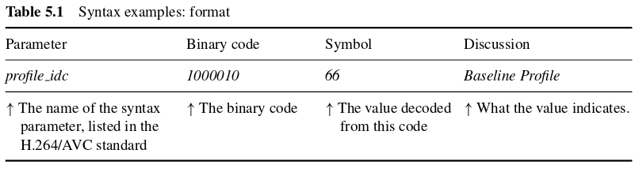
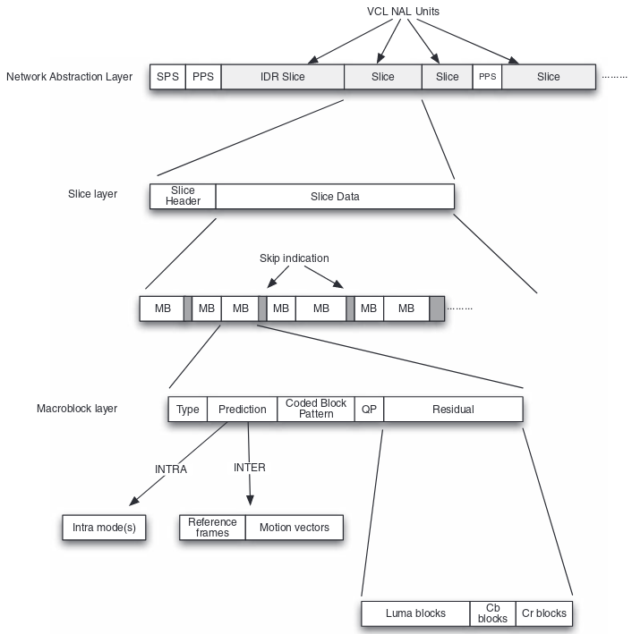
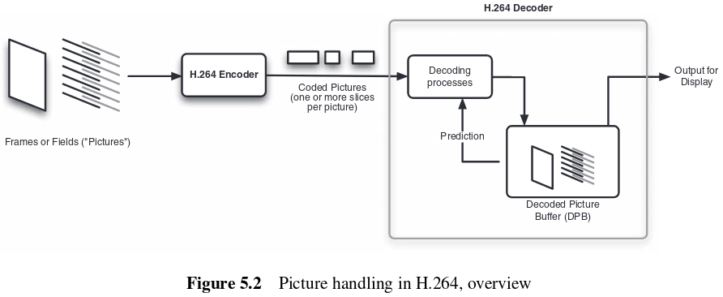
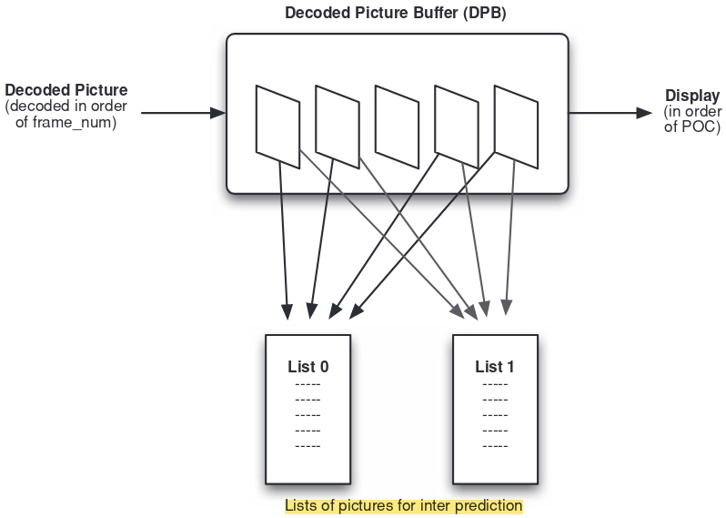
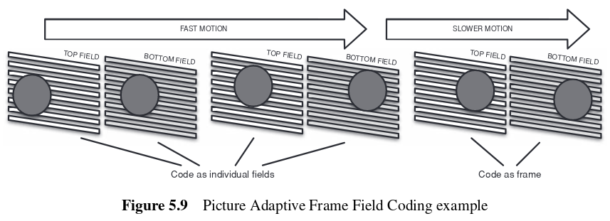
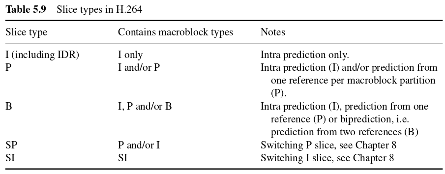

H.264 syntax¶
5.1 Introduction¶
An 'H.264 video' is a video sequence that is represented in a particular format, the H.264/AVC syntax. This syntax is defined in the H.264 industry standard and specifies the exact structure of an H.264-compliant video sequence, in terms of syntax elements, parameters describing different aspects of the coded sequence, and the way in which each element is represented as a binary code.
The syntax is hierarchical, from the highest level, the video sequence level, down through individual coded frames or fields (access units) and subsets of access units (slices) to macroblocks and blocks.
Control parameters are stored as separate syntax sections such as Parameter Sets or as part of sections such as the macroblock layer.
The following syntax examples will follow this format:

5.2 H.264 syntax¶
The hierarchical organization of the H.264/AVC syntax can be seen in the figure below. The Network Abstraction Layer (NAL) consists of a series of NAL UNITS. Sequence Parameter Sets (SPS) and Picture Parameter Sets (PPS) are NAL units that signal certain common control parameters to the decoder. Coded video data is communicated in Video Coding Layer (VCL) NAL units, known as coded slices. An access unit, a coded frame or field, is made up of one or more slices. At the slice layer, each slice consists of a Slice Header and Slice Data. The Slice Data is a series of coded macroblocks (MB) and skip macroblock indicators, which signal that certain macroblock positions contain no data.
A coded video sequence begins with an Instantaneous Decoder Refresher (IDR) Access Unit, made up of one or more IDR slices, a special type of Intra coded slice. Subsequent video frames or fields, described as Access Units, are coded as slices. The video sequence ends when a new IDR slice is received, signalling a new coded sequence, or when the transmission is complete.

Each coded macroblock contains the following syntax elements:
- MB type: I/intra coded, P/inter coded from one reference frame, B/inter coded from one or two reference frames.
- Prediction information: prediction mode(s) for an I macroblock, choice of reference frame(s) and motion vectors for a P or B macroblock.
- Coded Block Pattern CBP: indicates which luma and chroma blocks contain non-zero residual coefficients.
- Quantization Parameter QP, for macroblocks with CBP =/= 0.
- Residual data, for blocks containing non-zero residual coefficients.
A NAL unit contains a Raw Byte Sequence Payload (RBSP), a sequence of bytes containing syntax elements. H.264 syntax elements are binary codes with varying length, and so a sequence of syntax elements within a NAL unit will not necessarily fit into an integral number of bytes. Zero-valued bits are added to the end of the RBSP contents in order to ensure that the length is an integral number of bytes (RBSP trailing bits).
5.3 Frames, fields and pictures¶
An H.264 encoder converts video frames into compressed or coded pictures. H.264/AVC defines a frame as an array of luma samples and two corresponding arrays of chroma samples. The two fields, top and bottom, that make up a frame may be sampled at the same time instant, progressive scan, or at different time instants, interlaced scan. The term picture refers collectively to a frame or a field.
Frames or fields are encoded to form coded pictures, each of which is composed of one or more slices. Slices are decoded to produce decoded pictures, which are stored in a Decoded Picture Buffer (DPB). Pictures in the DPB may be used for inter prediction of further coded pictures and/or output for display.

It is important to distinguish between three different orders of pictures: decoding order, the order in which pictures are decoded from the bitstream, display order, the order in which pictures are output for display, and reference order, the order in which pictures are arranged for inter prediction of other pictures.
The decoding order of pictures, i.e. the order in which a video decoder should process the coded pictures, is indicated by the parameter frame_num.
The display order of pictures is determined by the parameters TopFieldOrderCount and BottomFieldOrderCount, collectively described as Picture Order Count, POC.
The reference order of pictures is determined by one or two lists, each of which is an ordered list of all the available decoded pictures. A P slice uses a single list, list0, and a B slice uses two lists, list0 and list1, each containing available reference pictures in different orders.

5.3.4 Frame and field coding¶
A video sequence may be coded in Frame mode only, with no special coding of fields, or in Frame/Field mode, using special coding tools for interlaced video, signalled by the syntax element frame_mbs_only_flag in the Sequence Parameter Set. If this flag is set to zero, special coding of fields or interlaced video is enabled.
5.3.4.1 Coding pictures in frame or field mode¶
If frame/field coding is enabled, each frame of video, a pair of fields, may be coded as a complete frame, i.e. one picture = one frame, or as two separate fields, i.e. one picture = one field. The syntax element field_pic_flag is signalled in each Slice Header and indicates whether the current coded picture is a frame or a field. This give rise to the following two cases:
- The picture is coded as a complete frame: The complete frame, which happens to include two fields, is coded as one or more slices, each containing an integral number of macroblocks. Reference picture list(s), used for motion compensated prediction of P- or B-macroblocks, are constructed from previously coded frames, i.e. each reference picture is a complete coded frame. Block coefficients are scanned in a zig-zag order. Macroblocks are optionally coded as macroblock pairs in Macroblock Adaptive Frame Field Mode.
- Picture contains one field: The current top or bottom field is coded as one or more slices, each containing a number of macroblocks. Reference picture list(s) are constructed from previously coded fields, i.e. each reference picture is a coded field. Each field of a stored reference frame is identified as a separate reference picture with a unique index$^1$. An inter-coded macroblock is predicted from region(s) in previously coded field(s). Block coefficients are coded in a modified or field scan order.
The coded frames in the Decoded Picture Buffer (DPB) may therefore be accessed as complete frames, containing top + bottom field, or as individual fields, depending on whether the current picture is coded in frame or field mode.
An encoder may choose to switch adaptively between frame and field coding during a sequence, for example, to improve the compression performance for interlaced video or for progressive video that was converted from an interlaced source.
$^1$ When decoding a field, there are effectively twice as many reference pictures available as there would be when decoding a frame at the same position.
For an interlaced video sequence, field coding tends to be more efficient when there is significant motion in the scene which tends to give larger changes between successive fields, whereas frame coding tends to be more efficient in more static areas of the scene where there is less change between successive fields. Switching between frame and field coding at the picture level is known as Picture Adaptive Frame Field Coding (PAFF).

5.3.4.2 Coding macroblocks in frame or field mode (MBAFF)¶
Macroblock Adaptive Frame Field Coding (MBAFF) is a coding mode that is enabled in the Sequence Parameter Set and is available thereafter in any slice coded in Frame mode. MBAFF makes it possible to adaptively switch between frame and field coding within a single frame, for example, to maximize coding efficiency. Macroblocks are handled in pairs, consisting of two vertically adjacent macroblocks.
For each macroblock pair, mb_field_decoding_flag, signaled in the header of the upper macroblock, indicates whether the pair is coded as a frame macroblock pair or a field macroblock pair. If it is a frame MB pair, then the top and bottom macroblocks are coded separately as frame macroblocks. Blocks are scanned using zig-zag scan. If it is a field MB pair, alternate lines of the MB pair are mapped to top and bottom field macroblocks. Each field macroblock is predicted from the corresponding field in reference picture(s). Blocks in a field MB are scanned using field scan.
5.4 NAL unit¶
H.264 bitstream is transmitted or stored via a series of Network Abstraction Layer packages, called NAL units. The package contains header and body information, along with an importance factor that indicates whether that package must be properly received and with greater priority. Parameter Sets and slices used as reference are examples of high priority packages.
Coded slices are described as Video Coding Layer (VCL) NAL units. A coded sequence begins with an Instantaneous Decoder Refresh (IDR) Access Unit, an Intra coded slice. This is followed by the default slice type.
The default slices can contain Data Partitioned slices, separate NAL units which carry different components of coded video data that can not be lost due to error-prone transport situations.
Non-VCL NAL units include Parameter Sets, Supplemental Enhancement Information parameters and delimiters that define boundaries between coded sections. Basically header information.
5.5 Parameter Sets¶
Parameter sets are NAL units that carry decoding configuration. It is required only a single set for a number of slices, and it can be sent via special protocols in order to ensure its correct receiving. One of these protocols is the Forward Error Correction.
A Sequence Parameter Set (SPS) contains parameters common to an entire video sequence, such as the Profile and Level, the size of a video frame and certain decoder constraints such as the maximum number of reference frames. Each SPS has a unique identifier called seq_parameter_set_id.
A Picture Parameter Set (PPS) contains parameters common to a subset of slices, and include entropy coding type, number of active reference frames and initialization parameters. The PPS has its own unique identifier, but it also points to a reference SPS, inheriting its parameters. Each coded slice points to a PPS and inherits its parameters. In this way, there is considerable flexibility to set up common coding parameters via SPS and PPS NAL units and then refer to these in subsequent coded slices.
Activation of Parameter Sets
Parameter Sets remain inactive until second order, and as such it is not used by the decoder. A slice may refer to a PPS, activating until a different one is referred instead. By activating a PPS, the SPS that it refers to is also activated, and will remain that way until the end of the sequence, signaled by an IDR Access Unit. This way, an SPS is effectively activated by an IDR slice.
5.6 Slice Layer¶
5.6.1 Slice types¶
There are different slice types with different sizes. The encoder may choose between one slice per picture, many slices per picture with many blocks per slice, or many slices per picture with a fixed number of macroblocks. Each type will be better for different scenarios and depending on the content of the sequence. See table below for slice types.

5.6.2 Slice Header¶
Each slice contains a header with information common to all macroblocks within. The header specifies the type of slice, the default quantization parameter QP, the reference frame settings, and the number of the frame in the sequence.
5.6.3 Slice Data¶
The slice data is a series of macroblocks that make a slice. During these sequences, there is a common empty macroblock called a skip macroblock, and the amount of skips can signal the type of entropy coding used. A sequence of skips is flagged by mb_skip_run and indicates the CAVLC entropy coding mode, and a single skip signaled by mb_skip_flag indicates the CABAC entropy coding mode. This skip macroblock can not occur in I type slices, that contains Intra coding predictions.
5.7 Macroblock layer¶
5.7.1 Overview¶
The Macroblock Layer contains all the syntax elements necessary to decode a single macroblock.
mb_type indicates the macroblock coding type, I, SI, P or B, and further information about macroblock prediction and coding. An I macroblock (Intra) can occur in any slice type and is coded without reference to any other slices. An SIntra MB (SI) occurs only in switching or SI slices. A P macroblock (Predicted) can occur in P or B slices and is an Inter-prediction macroblock with reference to one slice, and a B macroblock (BiPredicted) can only occur in B slices and is an Inter-prediction macroblock with reference to two other slices.
5.7.2 The Intra PCM mode¶
The Intra PCM (Pulse Code Modulation) mode is an optional mode of coding a macroblock, signalled by mb_type I_PCM. If I_PCM is chosen, the usual prediction, transform and entropy coding are bypassed and the 'raw' content of luma and chroma samples are transmitted by the following process:
- Send zero bits until the current position in the bitstream is byte aligned.
- Send every luma sample, 256 samples in total, as an individual BitDepth$_Y$-bit value.
- Send every chroma sample, 64 samples for 4:2:0 format, as an individual BitDepth$_C$-bit value.
BitDepth$_Y$ and BitDepth$_C$ are the number of bits to represent an uncompressed luma or chroma sample, respectively. Each BitDepth parameter defaults to 8, i.e. 1 byte per sample, but higher bit depths may be set in the SPS for certain Profiles.
Clearly, I_PCM mode does not provide compression, as the 'raw' luma and chroma samples are simply inserted into the H.264/AVC bitstream. There are some situations where this can prove useful, for example:
- When video is coded at a very high perceived quality / very low QP setting, for example, for applications such as content archiving or distribution where high quality is required, there may occasionally be macroblocks which, when coded using the usual processes of prediction, transform, and entropy coding, generate more bits than the original 'raw' data.
- If I_PCM mode is selected for every macroblock, the H.264/AVC bitstream becomes a container for uncompressed video. This makes it possible for an application to make use of all the other features of H.264/AVC such as package handling, frame numbering and transport support, whilst retaining the original video samples.
5.7.3 Macroblock prediction¶
The Macroblock prediction syntax elements indicate how intra or inter prediction is carried out for the current macroblock. Depending on the type of prediction used, the flags sub_mb_pred or mb_pred are used. When sub-pixel sizes are used, the prediction mode for each block must be signalled. This is true for Intra frames of 4 x 4 or 8 x 8 types, when the type of prediction for each luma and chroma block must be informed. When using Inter prediction modes like P or B with partitions other than the default 16 x 16 there must be extra information provided beyond the motion vector difference (mvd) and the reference frames taken from list 0 and list 1.
All sub-macroblock partitions in a sub-macroblock share the same reference picture(s), whereas each sub-macroblock partition has its own motion vector (x, y) pair. Each partition has one or two reference frames, one from List 0, one from List 1 or one from each List, if using biprediction, and a corresponding number of mvd(x, y) pairs signalled in the bitstream.
Each syntax element is only sent if it is needed. For example, if there is only one reference frame in a List, it is not necessary to send a reference index for that List and so the decoder does not expect to receive one.